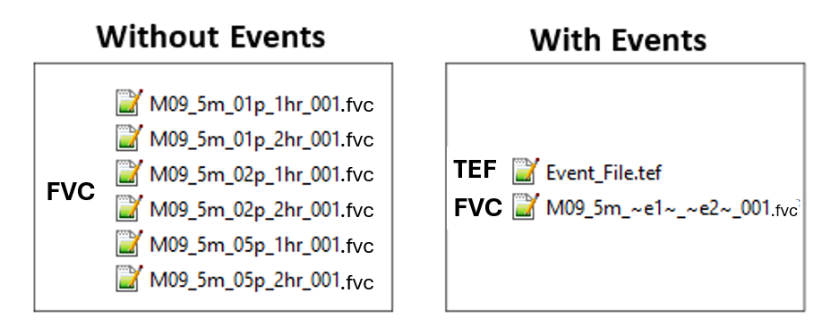

| Command | Description |
|---|---|
Conditional - Required when using event simulation management logic. Starts the definition of a command block for the event. |
|
Conditional - Required if using event simulation management logic. Ends the definition of a command block for the event. |
|
Conditional - Required if using model events funcationality. Assigns dynamic text replacement for user-defined text in .fvc files. |
|
Optional - Used to set the default events. In practice these defaults are typically overridden at runtime. |
|
Optional - Reference to the TUFLOW FV Event File. |
|
Optional - Enables use of conditional programming statement. |
|
Optional - Enables nested if event conditional programming statements |
|
Optional - Catch all argument for logic not captured by If Event or Else If Event. |
|
Optional - Used to pause a simulation. Prints a message to the console window. |
|
Conditional - Required if using event simulation management logic or nested scenario definitions. Closes an event conditional programming block. |
11 Managing And Starting Simulations
11.1 Overview
This chapter describes model naming conventions and the use of the TUFLOW FV Events, Scenarios and Variables functionality to support simulation of multiple scenarios and events from a single control file (.fvc). The latter part of the chapter describes the Auto Terminate feature and provides an example of its application.
11.2 File Naming
A single hydrodynamic model may generate a large number of input, check and result files over the course of development and execution. Establishing a clear and consistent naming convention is an important aspect of model development. Effective naming conventions support interpretation, organisation, error checking, quality control and traceability for quality assurance purposes.
The examples provided illustrate progression from a simple naming convention to more detailed conventions that account for different events and scenarios. The focus is on naming of the .fvc control file, as this determines the prefix applied to associated check, result and log files.
Use of concise file names, with acronyms where appropriate, supports clarity and manageability. For example, for a model of the Hawkesbury River with a simulation period from 1 January 2019 to 3 January 2019, the file name HR_20190101_20190103_001.fvc is preferable to Hawkesbury_River_01_January_2019_03_January_2019_001.fvc.
Example 1
HR_001.fvc
In its simplest form, TUFLOW FV model names consist of a short study identifier combined with a version number. The study identifier is typically used across all input files to indicate that the files are specific to a particular study. The version number is used to distinguish different iterations of the model. Each time a change is made and the model is rerun, the version number is incremented. This approach supports clear identification of which input files produced a given set of model outputs and is important for troubleshooting and quality control activities.
Example 2
HR_20190601_20190831_001.fvc
HR_20200601_20200831_001.fvc
Many hydrodynamic modelling studies require simulation of multiple events or combinations of events, such as differences in magnitude, duration, temporal pattern or climate condition. In these cases, inclusion of an event identifier within the simulation name is preferable to relying only on version numbering.
In the examples shown, a consistent date format is used to represent Australian winter periods from 1 June 2019 to 31 August 2019 and from 1 June 2020 to 31 August 2020. The same number of characters is used for both file names. Consistent character length supports correct alphabetical ordering when files are viewed in Windows Explorer. The version number is unchanged in this example, indicating that the same model configuration was applied to two different simulation periods.
Section 11.3.3 describes the Events functionality, which supports simulation of one or more events using a single .tef control file.
Example 3
HR_20190101_20190103_EXG_001.fvc
HR_20190101_20190103_DEV_001.fvc
Many hydrodynamic modelling studies require simulation of multiple scenarios, such as existing and development conditions or sensitivity testing where one or more model parameters are varied. Including the scenario identifier within the .fvc file name distinguishes outputs associated with each scenario. The characters used to represent the scenario are typically applied consistently to scenario specific model input files.
For example, a development scenario identified as DEV may include construction of a new weir structure. In this case, a GIS layer used to represent the weir may be named 2d_ns_HR_DEV_weir_001.shp. Presence of this layer within a simulation representing the existing scenario identified as EXG indicates an inconsistency in scenario configuration.
Section 11.3.4 describes the Scenarios functionality, which supports modelling of one or more scenarios using a single .fvc control file.
11.3 Simulation Management
11.3.1 Overview
Modelling studies commonly require simulation of multiple events or time periods. Examples include the following cases.
- Coastal studies that consider different seasons, climate change conditions, multiple tidal periods or the duration of individual dredging campaigns.
- Storm tide studies that evaluate alternative combinations of tropical cyclone tracks and tidal conditions.
- Flood studies that assess annual exceedance probability events, including 0.2, 0.5, 1.0, 2.0, 5.0, 10.0, 20.0 and 50.0 percent events, as well as extreme flood conditions.
- Water quality studies that investigate multiple scenarios to assess impacts of proposed changes or effectiveness of management interventions.
To support simulation management and quality control, TUFLOW FV includes three features that may be used individually or in combination.
- Model Events provide event management capability to support simulation of multiple event combinations, such as magnitude, duration, temporal pattern or climate change condition, using a single set of control files rather than creating separate control files for each simulation. See Section 11.3.3.
- Model Scenarios provide a framework for simulation of alternative model configurations, such as proposed bathymetric changes, from a single
.fvccontrol file rather than requiring separate control files for each scenario. See Section 11.3.4. - Model Variables enable assignment of a user specified value to a single string variable. See Section 11.3.5.
Construction and use of events, scenarios and variables are described in the following sections, after introduction of the general nomenclature used to define these features.
11.3.2 Nomenclature
A text substitution mechanism is required to enable use of a single .fvc control file for repeated execution of multiple events and or scenarios. TUFLOW FV implements this capability using the tilde ~ symbol to delimit substitutable event and scenario identifiers within .fvc file names. The .fvc file name includes paired tildes for each event and scenario intended to be simulated in combination.
The same control file is executed repeatedly with different event and scenario arguments supplied at run time. These arguments perform defined functions within the .fvc file and are substituted at locations corresponding to the paired tildes in the file name.
For example, where a model requires simulation of two events, such as an inflow event and a tidal event, together with one scenario, such as an alternative bathymetry setting, the .fvc file name must accommodate three substitutable identifiers using tilde pairs. In this context, the identifiers eX and sX denote event and scenario keywords respectively, where X is a sequential integer.
Model_~e1~_~e2~_~s1~_001.fvcIn one configuration, the event and scenario arguments may be defined such that e1 is assigned the value Q100, e2 is assigned the value HighTide and s1 is assigned the value BASECASE. In this case, the reusable .fvc control file is resolved using these argument values.
Model_Q100_HighTide_BASECASE_001.fvcThis .fvc control file is not created in this substituted form, as doing so would negate the purpose of using wildcard substitution within a single .fvc file. Output files produced by the simulation are named according to the resolved event and scenario values applied during execution.
Model_Q100_HighTide_BASECASE_001.nc
Model_Q100_HighTide_BASECASE_001.csvThis means that only one *.fvc is used, but multiple sets of uniquely named output files are created.
In addition to tilde based substitution for events and scenarios, variables may be referenced within .fvc files using double angle bracket notation. Where a variable named DO_HIGH is assigned a value of 6.0, the variable may be referenced anywhere within an .fvc file using the syntax <<DO_HIGH>>. An example application is provided for specification of water quality initial conditions.
Initial WQ Concentration == <<DO_HIGH>>Use of this notation for configuration and execution of events, scenarios and variables is described in the following sections.
11.3.3 Events
Event management supports execution of multiple event combinations, such as magnitude, duration, temporal pattern and climate change condition, using a single set of control files rather than creating separate control files for each simulation.
For example, a flood study may require simulation of the 1 percent, 2 percent and 5 percent Annual Exceedance Probability (AEP) events. Each AEP event may require simulation for multiple storm durations, such as 1 hour and 2 hours. Figure 11.1 presents the number of .fvc control files required with and without use of event management.
Commands associated with event management are presented in Table 11.1.

11.3.3.1 TUFLOW Event File
Multiple events are defined using a TUFLOW Event File, commonly with the .tef extension. The file contains .fvc commands that apply to specific events. The .tef file is referenced within the .fvc file using the Event File command. Up to nine different event types may be specified for a simulation, although in most applications only one or two event types are required.
Commands from the .tef file are inserted into the simulation at the location where the Event File command is read. These commands are then processed as if they were defined directly within the .fvc file at that position. As the event file is commonly used to overwrite default command values, the Event File command is typically located at the end of the .fvc file. An example of referencing a TUFLOW Event File within a .fvc file is provided below.
! EVENTS
Event File == FLD008_005.tef ! Reference to the TUFLOW Event FileWithin the .tef file, event specific commands are defined between the Define Event and End Define commands, which together form an event block. The Define Event command specifies the event name and initiates the corresponding event block. Commands within an event block are either applied or ignored at model startup depending on whether the event is activated using the -e run option or the Model Events command. Options for event execution are described in Section 11.3.3.2.
Any TUFLOW FV command may be included within a Define Event block, however event blocks are commonly used to define commands related to model boundary conditions and simulation timing, including start and end times. Global .fvc commands may also be included within the .tef file by placing them outside the Define Event blocks, typically at the beginning of the file.
The BC Event Source command enables runtime text substitution within .fvc files. This functionality allows boundary conditions, include files or model parameters to be varied through use of a single .fvc file.
An example of .tef syntax is provided in the following syntax block. The example follows the nomenclature described in Section 11.3.2, using paired tildes to identify text intended for substitution. These substitutable text identifiers are user defined and are distinct from reserved keywords. For example, aep is user defined, whereas e1 represents a reserved keyword.
! TUFLOW EVENT FILE (.TEF) defines the parameters for the model events
Define Event == Q100 ! Start definition of block of commands for event 'Q100'
BC Event Source == ~aep~ | 100yr ! Text for runtime substitution
Timestep Limits == 0.01, 0.3 ! Minimum and maximum time steps allowed
End Define
Define Event == 2h ! Start definition of block of commands for event '2h'
BC Event Source == ~dur~ | 2hr ! Text for runtime substitution
End Time == 3.0 ! Simulation end time
End DefineThe BC Event Source and Timestep Limits commands within the event block are applied when the events Q100 and 2h are specified at runtime. In this configuration, the commands perform the following functions.
- Within the Define Event block, Timestep Limits are selected according to event severity. Time step values are modified to accommodate events with increased water depths and velocities.
- The BC Event Source command assigns dynamic text substitution variables for rainfall intensity and storm duration.
If a model was run with Q100 and 2hr events specified then the substitution behaviour of BC Event Source is summarised below.
Text replacement is supported within directory paths and file names specified to the right of the == operator.
BC == Q, 1, ..\bc_dbase\FLD008_~aep~_~dur~.csv
Is substituted to:
BC == Q, 1, ..\bc_dbase\FLD008_100yr_2hr.csv
Replacement of command input parameters to the right of the == is supported. For example:
BC Header == inflow_time_~dur~, inflow_~aep~_~dur~_FC01
Is substituted to:
BC Header == inflow_time_2hr, inflow_100yr_2hr_FC01
Replacement is not allowed in TUFLOW FV command syntax to the left of the ==. For example:
BC Header ~aep~ == inflow_time_hr, inflow_~aep~_FC01
This will result in an error due to the ~aep~ to the left of the == operator.
BC Event Source text replacement is currently limited to
.fvcand include file commands. It is not currently available for commands within Sediment Transport (.fvsed), Water Quality (.fvwq) and Particle Tracking (.fvptm) Control Files.
11.3.3.2 Running Events
Two methods are available for execution of multiple events using a single .fvc control file.
- Use a batch file (
.bat). The-eor-eXoptions, whereXis an integer from 1 to 9, may be specified to execute multiple events using the same.fvccontrol file. This method supports automated execution of multiple event combinations. - Use the Model Events command. Event definitions may be modified manually within the
.fvcfile prior to each simulation. When the-eoption is used at runtime through a batch file, it overrides any events defined using the Model Events command within the.fvcfile. The Model Events command is typically used to define default event settings.
Examples of running events from the command line are presented in Section 11.3.3.3.
To incorporate event identifiers into output file names and maintain uniqueness, the text strings ~e~ or ~e<X>~, where <X> is an integer from 1 to 9, may be included within the .fvc file name.
MODEL_~e1~_001.fvcCan be configured to run any number of e1 event names:
- e1=0100F:
MODEL_0100F_001.fvc - e1=0200F:
MODEL_0200F_001.fvc - e1=0500F:
MODEL_0500F_001.fvc - e1=1000F:
MODEL_1000F_001.fvc
Multiple events can be simulated from a single .fvc file using a batch file. The example below uses three events to vary the event rainfall intensity, duration and temporal pattern. file. The example below uses three events to vary the event rainfall intensity, duration and temporal pattern.
set EXE=C:\Program Files\TUFLOWFV\TUFLOWFV.exe
set OMP_NUM_THREADS=4
%EXE% -e1 10pct -e2 01h -e3 T01 Nile_~e1~_~e2~_~e3~_001.fvc
%EXE% -e1 10pct -e2 01h -e3 T02 Nile_~e1~_~e2~_~e3~_001.fvc
%EXE% -e1 10pct -e2 02h -e3 T01 Nile_~e1~_~e2~_~e3~_001.fvc
%EXE% -e1 10pct -e2 02h -e3 T02 Nile_~e1~_~e2~_~e3~_001.fvc
%EXE% -e1 05pct -e2 01h -e3 T01 Nile_~e1~_~e2~_~e3~_001.fvc
%EXE% -e1 05pct -e2 01h -e3 T02 Nile_~e1~_~e2~_~e3~_001.fvc
%EXE% -e1 05pct -e2 02h -e3 T01 Nile_~e1~_~e2~_~e3~_001.fvc
%EXE% -e1 05pct -e2 02h -e3 T02 Nile_~e1~_~e2~_~e3~_001.fvc
%EXE% -e1 02pct -e2 01h -e3 T01 Nile_~e1~_~e2~_~e3~_001.fvc
%EXE% -e1 02pct -e2 01h -e3 T02 Nile_~e1~_~e2~_~e3~_001.fvc
%EXE% -e1 02pct -e2 02h -e3 T01 Nile_~e1~_~e2~_~e3~_001.fvc
%EXE% -e1 02pct -e2 02h -e3 T02 Nile_~e1~_~e2~_~e3~_001.fvc
%EXE% -e1 01pct -e2 01h -e3 T01 Nile_~e1~_~e2~_~e3~_001.fvc
%EXE% -e1 01pct -e2 01h -e3 T02 Nile_~e1~_~e2~_~e3~_001.fvc
%EXE% -e1 01pct -e2 02h -e3 T01 Nile_~e1~_~e2~_~e3~_001.fvc
%EXE% -e1 01pct -e2 02h -e3 T02 Nile_~e1~_~e2~_~e3~_001.fvcWhen a large number of events are executed, use of looping structures within a batch file may simplify execution. This approach reduces repetition compared with listing multiple similar command entries and supports improved robustness. Standard Windows batch file syntax may be applied by defining parameter arrays and iterating through those arrays during execution.
Using this approach, the sixteen TUFLOW FV executions referenced previously may be expressed in a more compact and maintainable form as follows:
set EXE=C:\Program Files\TUFLOWFV\TUFLOWFV.exe
set OMP_NUM_THREADS=4
REM Set arrays e1, e2 and e3
set ev1=10pct 05pct 02pct 01pct
set ev2=01h 02h
set ev3=T01 T02
REM Loop through arrays
for %%a in (%ev1%) do (
for %%b in (%ev2%) do (
for %%c in (%ev3%) do (
%EXE% -e1 %%a -e2 %%b -e3 %%c Nile_~e1~_~e2~_~e3~_001.fvc
)
)
)For further examples of running events from batch files including advanced batch looping refer to the TUFLOW FV Wiki.
11.3.3.3 Event Examples
Three examples are presented. Similar examples can be downloaded and run licence-free using the TUFLOW FV Example Model Suite.
- Examples 1 and 2 describe an estuary model use case in which a series of simulation years from 2016 to 2018 is executed. Example 1 applies a single event condition to select the simulation year. Example 2 introduces a second event condition to represent climate change allowance selection for inflow and downstream water level conditions.
- Example 3 describes a catchment model that applies three event conditions to execute combinations of rainfall event intensity, duration and temporal pattern.
In each example, start time, end time, initial condition and output directory commands are defined within the event blocks to modify model configuration according to the event being simulated.
11.3.3.4 Additional Functionality
11.3.3.4.1 Event Logic Blocks
While a Event File can be constructed to define any number of events and their associated commands, event names can also be used within *.fvc files to dynamically issue commands within If… Else If… Else… End If logical blocks. For example, the timestep limits can be set within a *.fvc depending on the event chosen. Specifically, if any event has one of these names then the timestep limits will be set accordingly.
! Modify the model timestep limits as a function of rainfall intensity
If Event == Q1
Timestep Limits == 0.1, 1.0
Else If Event == Q10
Timestep Limits == 0.01, 0.1
Else If Event == Q50
Timestep Limits == 0.01, 0.1
Else If Event == Q100
Timestep Limits == 0.001, 0.1
Else
Pause == Should not be here - invalid event specified.
End IfThe Pause command causes TUFLOW FV to stop whenever it is encountered, which in the above case would be if no event had been specified called any of Q1, Q10, Q50 or Q100.
‘OR’ logic can also be used in blocks such as the above by using the ‘|’ character. Noting that the Q50 and Q100 Timestep Limits are the same above, the overall block can be written more succinctly as demonstrated in the following example.
! Modify the model timestep limits as a function of rainfall intensity
If Event == Q1
Timestep Limits == 0.1, 1.0
Else If Event == Q10 | Q50 ! Example 'OR' logic using '|' character
Timestep Limits == 0.01, 0.1
Else If Event == Q100
Timestep Limits == 0.001, 0.1
Else
Pause == Should not be here - invalid event specified.
End If11.3.3.4.2 Events as Variables
Events are also automatically defined as variables and can be assigned accordingly within *.fvc control files. For example, if multiple events (e1) were set up and executed and a separate folder was desired for each event’s suite of outputs, the following syntax in the *.fvc would accomplish this outcome.
Output Dir == ..\results<<~e1~>>\If e1 was set to Q2 then the above would be interpreted as:
Output Dir == ..\results\Q2\Similar approaches can be applied to other TUFLOW FV *.fvc commands.
11.3.4 Scenarios
During project and research work, comparison of existing or base case conditions with future design conditions is commonly required. This may involve evaluation of one or more alternative design options. Example applications include the following cases.
- Earthworks or land use changes associated with proposed coastal or floodplain development.
- Construction of new capital works such as ports, dredged channels or alternative channel design options.
- Modification of dam operation strategies.
- Assessment of alternative bridge or hydraulic structure upgrade options.
Model Scenarios provide a framework for simulation of alternative design options using a single .fvc control file, rather than creation of separate control files for each scenario. Commands associated with scenario configuration are presented in Table 11.2.
| Command | Description |
|---|---|
Conditional - Required if using scenario based conditional programming. Required if using scenario functionality. Controls which commands are to be applied depending on the scenario or combination of scenarios specified by the user. |
|
Optional - Used to set the default scenario. In practice these defaults are typically overridden at runtime. |
|
Optional - Enables nested If scenarios using conditional programming statements. |
|
Optional - Catch all argument for logic not captured by If Scenario or Else If Scenario. |
|
Optional - Used to pause a simulation. Prints a message to the console window. |
|
Conditional - Required if using event simulation management logic or nested scenario definitions. Required if using scenario functionality. Closes an scenario conditional programming block. |
11.3.4.1 Running Scenarios
The approach to running scenarios is analogous to Model Events, except that a Scenario File similar to the Event File (.tef) is not required.
Two options are available to run scenarios from the same .fvc file:
- Using a batch file (.bat): Specify
--sor--sXoptions, whereXis a number from 1 to 9, to run single or multiple scenarios using the same .fvc file. Refer to the Scenario Examples. This is the recommended approach. - Using the Model Scenarios command: Change the scenarios manually before each simulation within the .fvc file. Note that if the
--soption is used, batch file--scalls override any scenarios defined using the Model Scenarios command within the .fvc. The Model Scenarios command is typically used to set the default scenario or scenarios.
To automatically insert the name of the scenario or scenarios into the output filenames and make the output names unique, place “~s~” or “~s<X>~”, where <X> is a number from 1 to 9, into the .fvc file name. For example, a study on the Mary River may use the following .fvc file name:
MR_~s1~_~s2~_001.fvcThis can be configured to run any number of s1 and s2 scenarios. For example:
set EXE=C:\Program Files\TUFLOWFV\TUFLOWFV.exe
set OMP_NUM_THREADS=4
%EXE% -s1 EXG -s2 BASE MR_~s1~_~s2~_001.fvc
%EXE% -s1 DEV -s2 OPT1 MR_~s1~_~s2~_001.fvc
%EXE% -s1 DEV -s2 OPT2 MR_~s1~_~s2~_001.fvc
%EXE% -s1 DEV -s2 OPT3 MR_~s1~_~s2~_001.fvcbecomes:
s1=EXG and s2=BASE: MR_EXG_BASE_001.fvc
s1=DEV and s2=OPT1: MR_DEV_OPT1_001.fvc
s1=DEV and s2=OPT2: MR_DEV_OPT2_001.fvc
s1=DEV and s2=OPT3: MR_DEV_OPT3_001.fvcBy coincidence, the character length for s1 (3) and s2 (4) is consistent between each run. This is not required
Examples of running scenarios from batch files including advanced batch looping are provided in the TUFLOW FV Wiki.
11.3.4.2 Scenario Examples
Example 1 can be extended to include an Option B, where Option B is a modified version of Option A as shown in Example 2a below.
In the above example, either “–s opB” or “–s1 opA –s2 opB” can be used for the run options when modelling the Option B scenario.
In the above, either “–s opB” or Model Scenarios == opB would be used when modelling Option B. If the Existing, Option A and Option B scenarios all had their own layer of materials for the whole model the commands could be laid out as shown in Example 2c noting the use of the Else option which forces the use of the layer 2d_mat_existing.shp if opA or opB is not specified.
Any scenarios are automatically set as variables, so have uses parallel to those described for Events above.
11.3.5 Variables
The Set Variable command can be used to assign a user-specified value to a string variable. This command operates at a higher level than If Scenario or If Event logic blocks so that variables can differ within different scenarios and events. The command is described in Table 11.3.
| Command | Description |
|---|---|
Optional - Assigns a user specified value to a string variable for dynamic substitution in other commands. |
Set Variable commands can only be specified in the .fvc file or within an include file referenced from the .fvc. They are not yet available within sediment, particle or water quality control files.
The example below is a floodplain model where two different mesh resolutions are being tested. To manage the size of result output, the variable “NC_OUTPUT_INTERVAL” is used to set the map output interval.
In the .fvc file we have the following syntax.
! ________________________________________________________________________________________________
! MODEL VARIABLES
If Scenario == HRES
Geometry 2D == ..\model\geo\Floodplain_001.2dm ! High resolution mesh
Set Variable NC_OUTPUT_INTERVAL == 900. ! Assign variable 900 seconds
Else If Scenario == LRES
Geometry 2D == ..\model\geo\Floodplain_002.2dm ! Low resolution mesh
Set Variable NC_OUTPUT_INTERVAL == 300. ! Assign variable 300 seconds
Else
Pause == Unexpected Scenario Specified - Refer FVC
End IfThe variable NC_OUTPUT_INTERVAL is dynamically replaced at runtime to adjust the NetCDF output interval.
Output == NetCDF
Output Parameters == h, v, d, zb
Output Interval == <<NC_OUTPUT_INTERVAL>> ! Output at 300 or 900 s as a function of Scenario
Output Statistics == max
Output Statistics dt == 1
End OutputThe Set Variable functionality available in TUFLOW FV 2025.0.0 can be used in combination with environment variables assigned in a batch or shell script, introduced in TUFLOW FV 2023.1. For example:
REM Example batch file that uses the environment variable IWL to set initial water level
set EXE=C:\Program Files\TUFLOWFV\TUFLOWFV.exe
set OMP_NUM_THREADS=4
set IWL=2.0
%EXE% Env_Var_Example.fvcWithin the .fvc file the environment variable value is returned via the $ syntax. For example:
Initial Water Level == $IWLachieves the same outcome as the variable syntax shown below.
Set Variable INITIAL_WL == 2.0
Initial Water Level == <<INITIAL_WL>>11.4 Auto Terminate (Simulation End) Options
The Auto Terminate command automatically stops a simulation once a specified water level threshold is reached at a user defined monitoring location. At model startup, TUFLOW FV reads the initial water level at the specified location (IWL) and compares it to the user defined target water level (WL_target). The simulation tracks the model water level at the specified location (MWL) and TUFLOW FV exits cleanly once the target condition is met. Auto termination is based on the following logic:
- If
IWL>WL_target, TUFLOW FV assumes that water levels will follow a decreasing trend during the simulation and will terminate whenMWL<=WL_target. - If
IWL<WL_target, TUFLOW FV assumes that water levels will follow an increasing trend during the simulation and will terminate whenMWL>=WL_target.
The command is described in Table 11.4.
| Command | Description |
|---|---|
Optional - Terminates the simulation when a specified water level threshold is reached at a monitoring location. |
The example below enables Auto Terminate with a target water level of 6.0 at a specified monitoring location within the model domain.
In the .fvc file the syntax is as follows.
! Auto Terminate
Auto Terminate == 1, 159.07365, -31.35875, 6.0 ! {0 Disables} | 1 Enables Auto Terminate, X coordinate of the monitoring point (map units), Y coordinate of the monitoring point (map units), Target water level at which the simulation will stop (mRL or ftRL)The log file reports the 2D cell ID associated with the specified monitoring location and if the coordinates fall outside the model domain, TUFLOW FV will return an error.